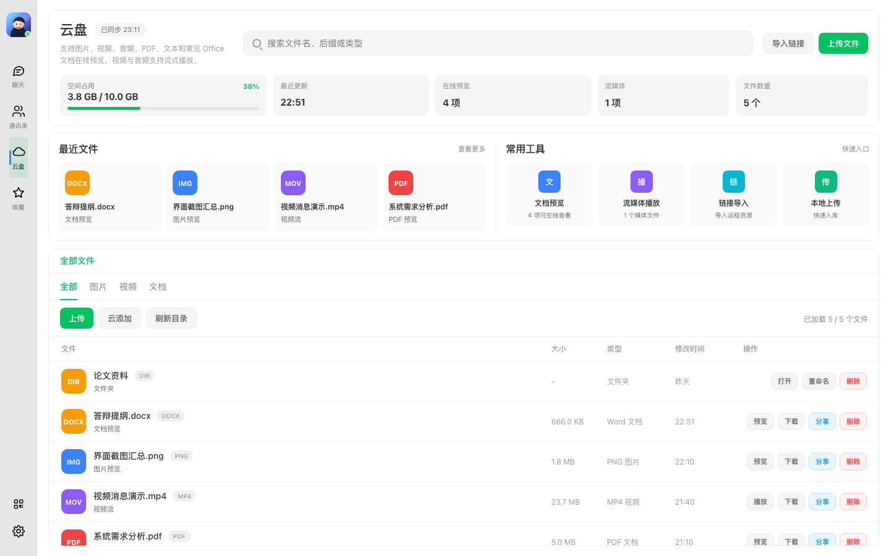
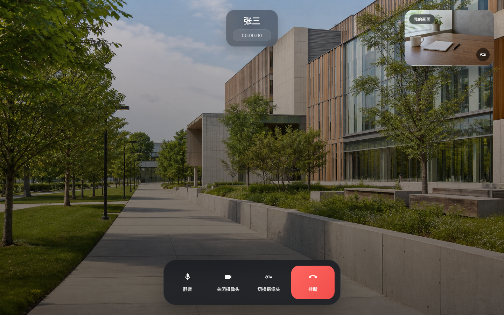
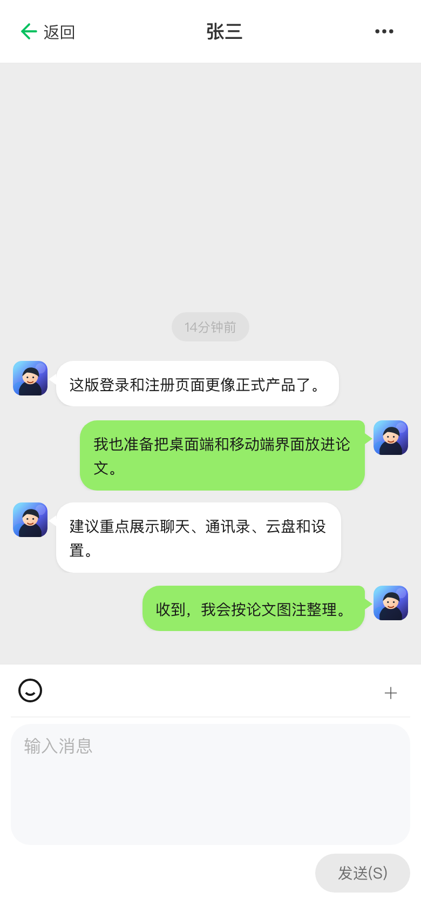
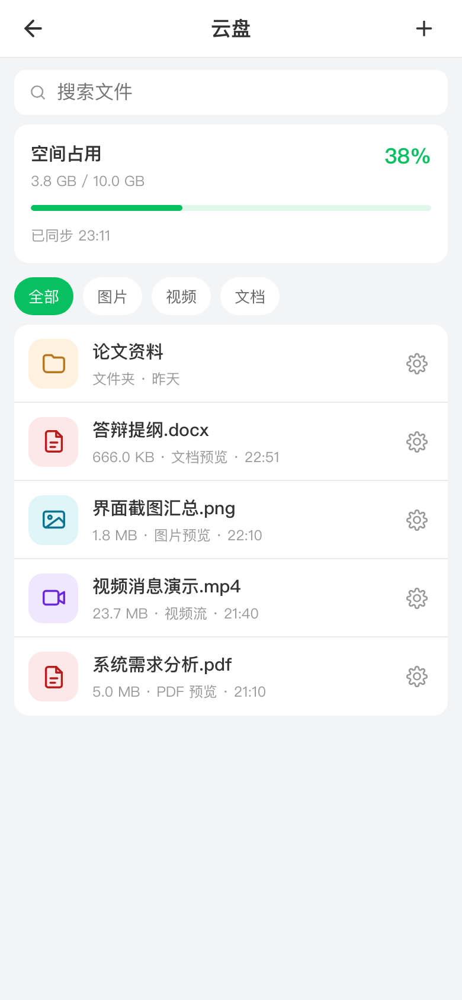

聊天与关系
好友申请与分组、单聊、群聊、群成员管理、回复、转发、撤回、收藏、已读状态和消息搜索。
核心功能围绕用户关系、消息、文件、设备和实时通信展开，每一项都落到可运行的客户端与 Java 后端链路。
好友申请与分组、单聊、群聊、群成员管理、回复、转发、撤回、收藏、已读状态和消息搜索。
文字、图片、文件、语音和视频消息，支持聊天文件转存、在线预览、受控分享与下载。
目录、上传、容量、预览、下载和分享。聊天对象与云盘对象分开鉴权，避免不同业务入口混用。
桌面与移动端共享会话状态，支持断线补拉、系统通知、语音/视频通话和客户端安装包。
从本地消息、收藏和联系人中筛选有限上下文，以 SSE 逐段展示回复，完成后持久化并同步其他设备。
通过 Tauri 连接文件系统、系统托盘、通知、剪贴板、扫码和窗口状态，兼顾桌面与移动环境。
实时通知、持久状态与对象文件分别处理，避免把 WebSocket 误当成消息可靠性的全部。
音视频：服务端负责身份校验和信令转发，媒体尽量由终端通过 WebRTC 直接传输。
离线恢复：在线连接负责及时提醒，最终恢复依赖持久事件、设备游标和幂等合并。
简历中的技术点对应真实问题、设计选择和可以验收的系统行为。
客户端为一次发送保留稳定消息号，服务端先幂等落库，再异步投递。在线设备通过 WebSocket 及时获知新消息，断线设备按持久事件和游标补拉。
结果：弱网重试不会因为重新生成编号而重复入库，换端或重连后仍可继续恢复未消费事件。
MySQL 保存文件元数据、容量和引用关系，MinIO 保存对象内容。聊天文件与云盘文件使用不同的访问入口，上传或转存失败时执行补偿清理。
结果：支持聊天文件转存和受控分享，同时降低孤儿对象、错误鉴权入口和重复存储造成的数据问题。
客户端只从本地消息、收藏和联系人中筛选少量相关上下文，服务端校验会话并通过 SSE 返回增量内容，完成后持久化正式消息。
结果：限制无关聊天数据进入模型，上屏过程保持流式体验，正式结果仍能被其他设备同步。
截图覆盖桌面与移动端的聊天、云盘和视频通话，展示同一业务在不同设备上的落地。




公开页不展示私有源代码，但保留可以核对的测试结果、真实截图、构建产物和能力边界。